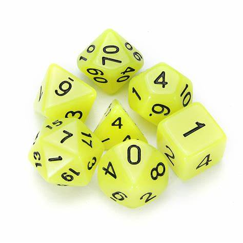

%%| fig-width: 6.5
%%| label: fig-2
%%| fig-cap: "bags-flowchart"
flowchart LR
Dice["Multi-Dice"]
Dice==1/5==>f4("4-faces")
Dice==1/5==>f6("6-faces")
Dice==1/5==>f8("8-faces")
Dice==1/5==>f12("12-faces")
Dice==1/5==>f20("20-faces")
f4==0==>f46("6️⃣")
f6==1/6==>f66("6️⃣")
f8==1/8==>f86("6️⃣")
f12==1/12==>f126("6️⃣")
f20==1/20==>f206("6️⃣")
5-multi-side-dice
简介
骰子有很多面的类型 Figure 1
参考 hakank-bayes-code dice_problem
问题: 如果一个袋子内有 4面,6 面, 8 面, 12 面, 20面的骰子.
- 如果一个人从袋子内随机取出一枚骰子, 告诉你扔出点数为 \(6\), 根据点数判断是哪个骰子
- 如果结果是 [ 6, 8, 7, 7, 5,4] 那么最有可能的是哪个骰子

1. 通过概率路径图的计算
1.1 概率路径图
1.2 计算单次点数概率
Code
using Distributions,DataFrames
dice_faces=[4,6,8,12,20]
"取出每个骰子的概率数组"
dice_prob=fill(1//5,5)
df=DataFrame(name=String[],d4=Float64[],d6=Float64[],
d8=Float64[],d12=Float64[],d20=Float64[]
)
function dp_arr(num::Int)
arr=Rational[]
for idx in eachindex(dice_faces)
res = num <= dice_faces[idx] ? (1//dice_faces[idx]) : 0
push!(arr,res)
end
total=sum(arr)
temp= ([i//total for i in arr])|>(d->Float64.(d))|>d->round.(d,digits=2)
return temp
end
for idx in 1:20
temp=dp_arr(idx)
#@info "点数为$idx,各骰子的概率"=>arr
push!(df,(name="点数:$idx",d4=temp[1],d6=temp[2],d8=temp[3],
d12=temp[4],d20=temp[5]
))
end
df20×6 DataFrame
| Row | name | d4 | d6 | d8 | d12 | d20 |
|---|---|---|---|---|---|---|
| String | Float64 | Float64 | Float64 | Float64 | Float64 | |
| 1 | 点数:1 | 0.37 | 0.25 | 0.19 | 0.12 | 0.07 |
| 2 | 点数:2 | 0.37 | 0.25 | 0.19 | 0.12 | 0.07 |
| 3 | 点数:3 | 0.37 | 0.25 | 0.19 | 0.12 | 0.07 |
| 4 | 点数:4 | 0.37 | 0.25 | 0.19 | 0.12 | 0.07 |
| 5 | 点数:5 | 0.0 | 0.39 | 0.29 | 0.2 | 0.12 |
| 6 | 点数:6 | 0.0 | 0.39 | 0.29 | 0.2 | 0.12 |
| 7 | 点数:7 | 0.0 | 0.0 | 0.48 | 0.32 | 0.19 |
| 8 | 点数:8 | 0.0 | 0.0 | 0.48 | 0.32 | 0.19 |
| 9 | 点数:9 | 0.0 | 0.0 | 0.0 | 0.62 | 0.38 |
| 10 | 点数:10 | 0.0 | 0.0 | 0.0 | 0.62 | 0.38 |
| 11 | 点数:11 | 0.0 | 0.0 | 0.0 | 0.62 | 0.38 |
| 12 | 点数:12 | 0.0 | 0.0 | 0.0 | 0.62 | 0.38 |
| 13 | 点数:13 | 0.0 | 0.0 | 0.0 | 0.0 | 1.0 |
| 14 | 点数:14 | 0.0 | 0.0 | 0.0 | 0.0 | 1.0 |
| 15 | 点数:15 | 0.0 | 0.0 | 0.0 | 0.0 | 1.0 |
| 16 | 点数:16 | 0.0 | 0.0 | 0.0 | 0.0 | 1.0 |
| 17 | 点数:17 | 0.0 | 0.0 | 0.0 | 0.0 | 1.0 |
| 18 | 点数:18 | 0.0 | 0.0 | 0.0 | 0.0 | 1.0 |
| 19 | 点数:19 | 0.0 | 0.0 | 0.0 | 0.0 | 1.0 |
| 20 | 点数:20 | 0.0 | 0.0 | 0.0 | 0.0 | 1.0 |
1.2 计算多次抛掷概率
例:当 结果为[6, 6, 8, 7, 7, 5, 4] 时各骰子的概率
Code
"dice 概率 数组 2"
function dp_arr(nums::Array{Int})
arr=Rational[]
for idx in eachindex(dice_faces)
res = mapreduce(x-> x<= dice_faces[idx] ? (1//dice_faces[idx]) : 0, *, nums)
push!(arr,res)
end
total=sum(arr)
return ([i//total for i in arr])|>(d->Float64.(d))|>d->round.(d,digits=2)
end
res=[[6, 6],[6, 6, 8],[6, 6, 8, 7],[6, 6, 8, 7, 7],[6, 6, 8, 7, 7, 5],
[6, 6, 8, 7, 7, 5, 4], [6, 6, 8, 7, 7, 5, 4, 11]]
#res=dp_arr2([6, 6, 8, 7, 7, 5, 4])
#= res-dp_arr2([6, 6, 8, 7])
Dict("dice-$(dice_faces[idx])" =>res[idx] for idx in eachindex(dice_faces)) =#
df2=DataFrame(name=String[],d4=Float64[],d6=Float64[],
d8=Float64[],d12=Float64[],d20=Float64[]
)
for r in res
arr=prob_res=dp_arr(r)
# arr=Dict("$(dice_faces[idx])"=>prob_res[idx] for idx in eachindex(dice_faces))
#arr=[prob_res[idx] for idx in eachindex(dice_faces)]
#@info "$r "=>arr
push!(df2,(name="$(r)",d4=arr[1],d6=arr[2],d8=arr[3],d12=arr[4],d20=arr[5]))
end
df27×6 DataFrame
| Row | name | d4 | d6 | d8 | d12 | d20 |
|---|---|---|---|---|---|---|
| String | Float64 | Float64 | Float64 | Float64 | Float64 | |
| 1 | [6, 6] | 0.0 | 0.53 | 0.3 | 0.13 | 0.05 |
| 2 | [6, 6, 8] | 0.0 | 0.0 | 0.74 | 0.22 | 0.05 |
| 3 | [6, 6, 8, 7] | 0.0 | 0.0 | 0.82 | 0.16 | 0.02 |
| 4 | [6, 6, 8, 7, 7] | 0.0 | 0.0 | 0.88 | 0.12 | 0.01 |
| 5 | [6, 6, 8, 7, 7, 5] | 0.0 | 0.0 | 0.92 | 0.08 | 0.0 |
| 6 | [6, 6, 8, 7, 7, 5, 4] | 0.0 | 0.0 | 0.94 | 0.06 | 0.0 |
| 7 | [6, 6, 8, 7, 7, 5, 4, 11] | 0.0 | 0.0 | 0.0 | 0.98 | 0.02 |